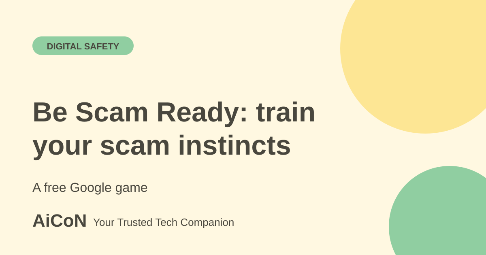

Be Scam Ready: a Google game to spot scam tricks
Be Scam Ready is a hands-on game from Google that shows how scammers pressure people. It is an awareness tool, not a scam detector. It works well with a simple pause habit before you click, pay or share.

What is Be Scam Ready?
Google describes it as a hands-on game that lets you experience scammers' tactics first-hand so you can build a gut instinct to shut fraud down. It is not new and it is not an AI tool. Google's page lists no price.
Three habits it teaches
- Think for yourself, do not follow the crowd. Scammers use fake popularity, glowing reviews and busy group chats. Verify claims with independent proof.
- It is okay to say no. Scams often start with a small, easy request and slowly ask for more. Treat each request separately.
- Slow down. Fake urgency like Limited Time Offer or Last Chance is meant to stop you thinking. Notice the emotion, step back and verify.
How to use it, step by step
- Open bescamready.withgoogle.com on your phone or computer.
- Choose Play Game and follow the scenarios.
- Notice which tricks worked on you and why.
- Share the link with parents, grandparents or colleagues and play together.
- Use the habits in real life: stop, verify with the official source and ask someone you trust.
A five-habit checklist: P.A.U.S.E.
Fortinet's Cybersecurity Awareness Month campaign gives a similar checklist: Pause before clicking links or downloading files; Ask yourself if it was expected and who it claims to be; check the URL; Share with care; Escalate if it feels off, by telling someone you trust and reporting it. The campaign pages and tools are aimed at Canadians, but the habits apply anywhere. Fortinet is a security vendor, and some of its training is paid.
Fortinet also offers scenario quizzes for students, workplaces and everyday users, with separate resource tracks for students and educators, businesses, and families. Its page describes free practical awareness resources and a downloadable Cyber First Aid Kit. The archive mentioned a shareable quiz score, but this review did not complete the quiz or confirm the score-sharing flow.
These are Canadian campaign resources, not Indian fraud-reporting channels. Use the practice to learn when to pause; use official Indian channels when reporting a real loss. Fortinet's paid training is separate from the free awareness materials.
What changed since the short post?
This guide pairs Google's existing game with Fortinet's 2026 P.A.U.S.E. campaign. These are awareness aids, not an AI detector or a guarantee against fraud.
Frequently asked questions
Is it free?
Google's page lists no price.
Does it detect scams for me?
No. It trains your judgement.
Is it only for English speakers?
We did not check language options. Look at the page for your language.
Sources: Be Scam Ready (Google), Fortinet P.A.U.S.E. (Canada). Checked 7 October 2026.